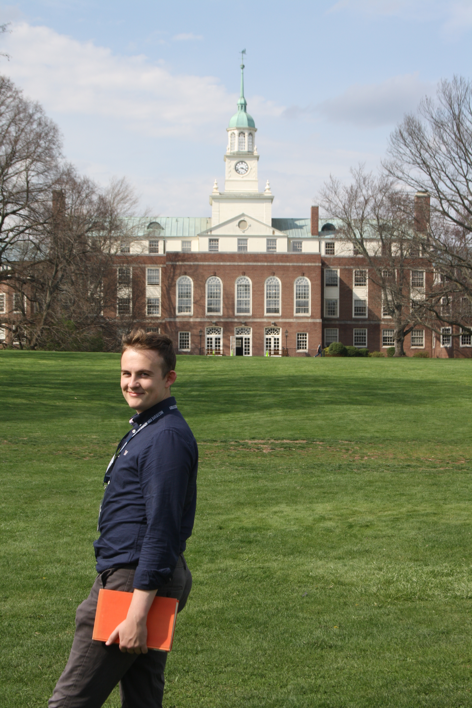

Welcome
I am a theoretical astrophysicist. Starting August 1, 2026 I will be Assistant Professor in the Department of Astrophysical Sciences at Princeton University.
Previously, from 2021–2026 I was a member in Astrophysics in the School of Natural Sciences at the Institute for Advanced Study in Princeton (as a John N. Bahcall Fellow from 2023–2026). From 2017–2021 I was a PhD student in the Astrophysics group at DAMTP, University of Cambridge, supervised by Dr Roman Rafikov and a member of Emmanuel College; for my thesis I was awarded the International Astronomical Union’s 2021 PhD Prize. From 2013–2017 I was an undergraduate in Physics at Merton College, Oxford.
I study astrophysical dynamics, from the evolution of disk galaxies (including spiral structure, bar–halo friction, Galactokinetics), to the origin of gravitational wave sources (in star clusters, galactic nuclei, hierarchical triples), to wide stellar binaries (their interactions with the Galactic tide, other stars, and their weird observed properties), to the kinetic theory of stellar systems (and its connection with plasma physics). You can learn more about my research here, and about my Princeton collaborators here.
I am also a co-organizer of the Undergraduate Summer Research Program in the Department of Astrophysical Sciences, and an advisory board member of the Journal of Plasma Physics.
Recent group highlights
- The first study of radial heating and migration in a realistic interstellar medium
- A unified theory of linear spiral structure in stellar disks
- Boosting the rate of black hole mergers in galactic nuclei
Contact
Chris Hamilton, Department of Astrophysical Sciences, Princeton University, 4 Ivy Lane, Princeton, New Jersey 08544, United States